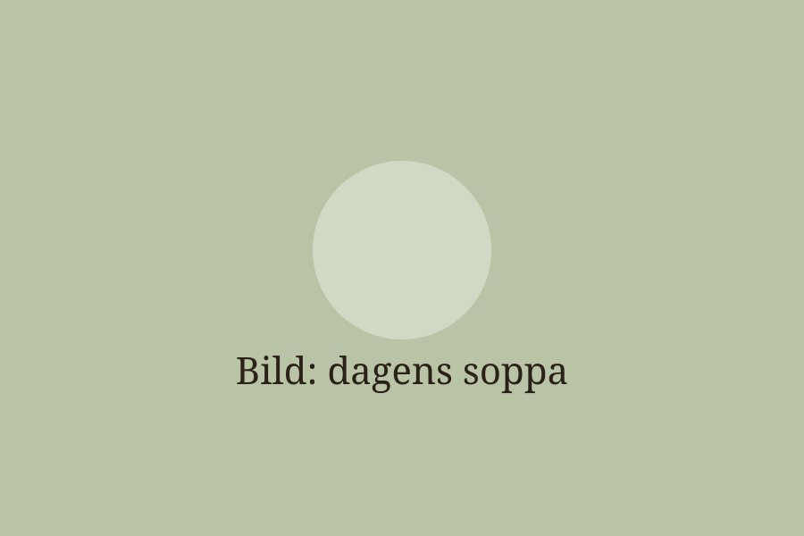

Fika som på farmors tid
Nybakat varje morgon, kaffe från ett litet rosteri i Järna och ett hörn som alltid är ledigt för dig. Välkommen in.
Kafé Hörnet
Nybakat varje morgon, kaffe från ett litet rosteri i Järna och ett hörn som alltid är ledigt för dig. Välkommen in.


Kardemumma i degen, pärlsocker på toppen.
Bakad kl 06.30.
38 kr

Dubbel espresso och skummad mjölk. Havremjölk utan extra kostnad.
49 kr

Just nu: rostad tomatsoppa med surdegsbröd och örtolja.
115 kr